The Herald is Scotland's oldest daily newspaper and one of the UK's most respected quality titles. Working within the brand's editorial framework, I conceptualised and executed campaign design across a wide spectrum — from the prestige of the Herald Scottish Business HQ Awards to the electric energy of the UEFA Euro 2024 campaign.
Each project required a deep understanding of the publication's brand equity, combined with the versatility to express very different visual tones — from black-tie ceremony gravitas to sports-day urgency.

The Herald serves multiple distinct audiences across its commercial and editorial output — from business readers invested in the Scottish Business HQ awards to football fans engaged with Euro 2024 coverage. Designing across these very different campaigns required a consistent brand anchor while maintaining tonal flexibility that kept each campaign feeling wholly authentic to its context.
I anchored all designs to The Herald's established typographic DNA — its distinctive masthead character and authoritative serif voice — while building custom colour palettes and imagery systems around each campaign theme. This preserved brand recognition while giving each initiative genuine visual distinctiveness and emotional resonance.
The Herald Scottish Business HQ campaign used deep charcoal, gold foil-style typography and structured layouts to project prestige and credibility. The Euro 2024 assets shifted into a high-energy sports register — bold colour blocking, kinetic photography, and condensed display type. For subscription and wine partnership campaigns, I dialled back to a refined editorial warmth that matched the reader's lifestyle expectations.
The Scottish Business HQ awards campaign achieved record commercial sponsorship uptake following the rebrand of its visual identity. The Euro 2024 campaign delivered strong reader engagement across digital platforms. Subscription campaigns leveraging the lifestyle-led design approach contributed to measurable increases in new reader conversion.
